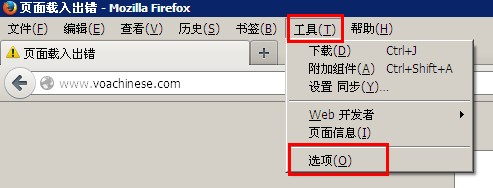
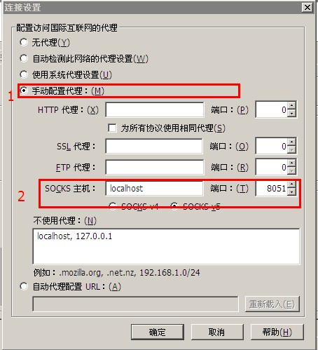
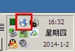
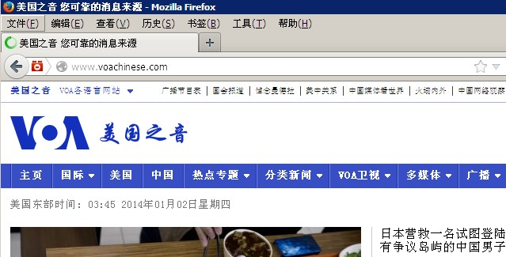

用户说明
1 安装浏览器
安装firefox浏览器（其它浏览器也可以 ）
2 浏览器设置
首先运行firefox，点击菜单栏的“工具”，再点击“选项”。

第二，在弹出的对话框里面，点击“网络”，再点击“设置…”

第三，在弹出的对话框里面，选择“手动配置代理”，“SOCKS 主机”栏填入localhost，端口填入8051。点“确定”保存设置。

3 启动代理
双击运行 runproxy-key.bat 或者 runproxy-passwd.bat，启动本地代理。这个时候电脑会有一个托盘图标右下角。

（说明：在图标上右键会弹出菜单，其中有一项叫“Close” 退出代理。）
4 使用
最后一步，打开试试能不能打开某些网站。比如 "美国之音" (http://www.voachinese.com/)。 如果能打开，应该大概是这样的。
